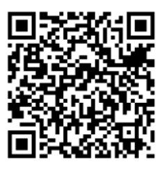

Planos angulos y movimineto de la cámara

Dominar el lenguaje visual es clave para transmitir emociones y mensajes con impactoüîé. Los planos (como el general o el primer plano) definen qu√© vemos y en qu√© contexto; los ángulos(picado, contrapicado) influyen en la percepci√≥n de poder o vulnerabilidad de los personajes; y los movimientos (paneos, travellings) gu√≠an la atenci√≥n del espectador de forma dinámica. Juntos, estas herramientas no solo enriquecen la narrativa audiovisual, sino que transforman una simple escena en una experiencia immersiva y memorable. Aprender a utilizarlos eleva cualquier proyecto, desde cortometrajes hasta contenidos educativos o promocionalesüìπ.
Objetivos de aprendizaje
- ü߆ Al finalizar la sesi√≥n, el estudiante identificará y clasificará correctamente al menos 8 de los 10 planos cinematográficos principales (general, entero, americano, medio, primer plano, etc.) presentados en un ejercicio visual, utilizando una rúbrica proporcionada.
- üîç Tras analizar 3 escenas de pel√≠culas, el estudiante explicará por escrito el efecto emocional de 3 ángulos de cámara (picado, contrapicado, neutro) con un 100% de precisi√≥n en la terminolog√≠a t√©cnica, en un informe de 500 palabras.
- üìù En 2 horas, el estudiante grabará una escena de 30 segundos aplicando 3 movimientos de cámara (paneo, travelling, zoom) de manera t√©cnicamente correcta y justificará su elecci√≥n narrativa en un breve informe.
- üíª Al concluir el m√≥dulo, el estudiante dise√±ará un guion gráfico (storyboard) con 6 vi√±etas que integren al menos 3 planos, 2 ángulos y 2 movimientos de cámara, coherentes con una narrativa propuesta, y recibirá retroalimentaci√≥n positiva en al menos el 80% de los criterios de evaluaci√≥n


Actividades prácticas
Ejercicio 1. Presupuesto para herramientas de desarrollo
Situación: estás creando un entorno de trabajo como programador y tienes $50.000 disponibles. Cada plugin premium que necesitas cuesta $8.000. ¿Cuántos plugins puedes comprar sin pasarte del presupuesto?
Desigualdad: 8000x ≤ 50000
Interpretación: calcula cuántos plugins puedes instalar sin exceder el presupuesto.
Ejercicio 2. Venta de cursos en línea
Situación: diseñaste un curso básico de programación y lo vendes a $6.000. Quieres ganar al menos $72.000 este mes. ¿Cuántas copias necesitas vender como mínimo?
Desigualdad: 6000x ≥ 72000
Interpretación: resuelve para saber el mínimo de estudiantes necesarios para cumplir tu meta.
Ejercicio 3. Meta diaria de ventas
Situación: tienes una app de comercio local y ayudas a un pescador a vender sus productos. Cada kilo se vende a $6.000. ¿Cuántos kilos debe vender al día para ganar exactamente $60.000?
Ecuación: 6000x = 60000
Interpretación: resuelve la ecuación y responde la pregunta.
Evaluación
Comprueba lo que has aprendido. Selecciona la respuesta correcta para cada pregunta.
Recursos para profundizar
Para ampliar tu conocimiento sobre los sistemas de ecuaciones lineales, te recomendamos explorar los siguientes enlaces y documentos:
-
Test sobre solución de ecuaciones lineales
{{ ... }} Ir al recurso
-
Prueba sobre solución de ecuaciones
Ir al recurso
-
Test sobre solución de desigualdades lineales
Ir al recurso
Bibliografía
https://www.mineducacion.gov.co/1621/articles-186635_archivo_pdf.pdf
https://unesdoc.unesco.org/ark:/48223/pf0000143685